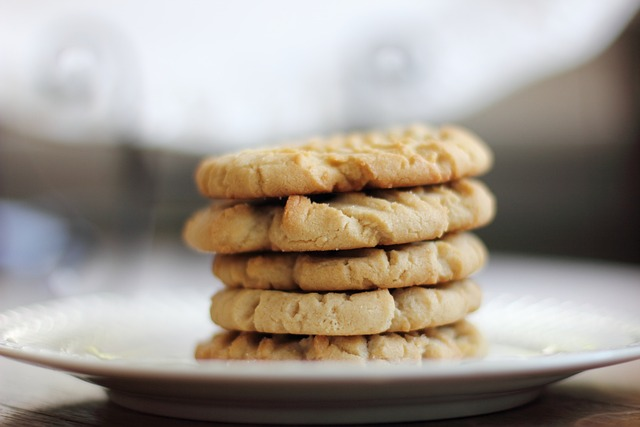
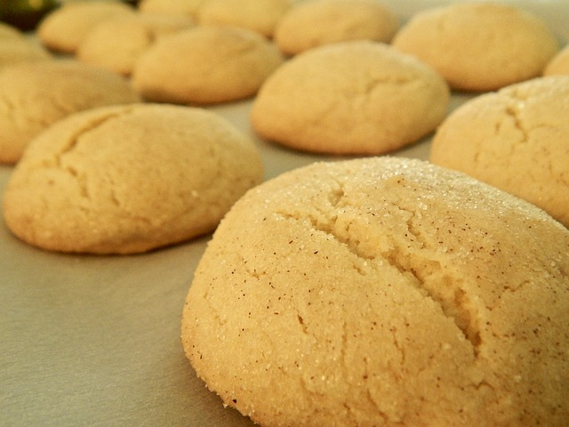

Preheat oven to 375 degrees F. In a small bowl, stir together flour, baking soda, and baking powder. Set aside.
In a large bowl, cream together the butter and sugar until smooth. Beat in the egg and vanilla. Gradually blend in the dry ingredients. Roll rounded teaspoonfuls of dough into balls, and place onto ungreased cookie sheets.
Bake for 8 to 10 minutes or until golden brown. Let it sit on the cookie sheet for two minutes before placing on wire racks to cool.

Snickerdoodle Ingredients
1 cup butter softened
3/4 cup sugar
3/4 cup brown sugar
2 eggs
1 tsp vanilla
2 3/4 cups flour
2 tsp cream of tartar
1 tsp baking soda
1/2 tsp salt
Cinnamon-sugar
3 tbsp sugar
1 tbsp cinnamon
Directions
Preheat oven to 350 degrees F
In a large bowl mix together flour, cream of tartar, baking soda, and salt. Set aside.
In medium size bowl cream together sugar and butter. Add eggs and vanilla blend well.
Add the dry ingredients to the wet ingredients and mix well.
Roll dough into 1 inch balls and roll in cinnamon-sugar.
Place about 2 inches apart on an ungreased cookie sheet.
Bake for 8 to 10 minutes
(Makes about 3-4 dozen cookies)

Cakepop Ingredients
1 box of your favorite cake mix
1 can frosting(about 1 1/2 cups)
Candy melts or chocolate for coating
Lollipop sticks
Sprinkles or decorations (optional)
Directions
Prepare and bake the cake following the instructions on the box. Allow the cake to cool completely.
Crumble the cooled cake and mix with the frosting until moist and moldable.
Form small balls, place on a baking sheet, and let it chill for 1-2 hours.
Melt the candy melts or chocolate as directed on the package
Insert lollipop sticks, dip the cake balls in the melted chocolate, and decorate.
Allow cake pops to set, and then enjoy on these tasty treats!